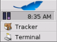
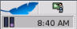

A view that's sitting on the Deskbar's shelf may not call any of these functions.


The Be Book - Special Topics - The Deskbar
|
status_t AddItem(BView* view,
int32* id = NULL);
status_t AddItem(entry_ref* addon,
int32* id = NULL);
status_t RemoveItem(int32 id);
status_t RemoveItem(const char* name);
int32 CountItems() const;bool HasItem(int32 id) const;
bool HasItem(const char* name) const;
status_t GetItemInfo(int32 for_id,
const char** found_name);
status_t GetItemInfo(const char* for_name,
const int32* found_id);
A view that's sitting on the Deskbar's shelf may not call any of these functions.
The Deskbar contains a shelf that contains replicants (archivable
BViews).
Typically, these replicants monitor or control some service. For
example, the BeOS provides shelf items that monitor and control the input
method mechanism, PPP, and the mail daemon (the date/time view is not a
shelf replicant):

AddItem() puts a new item on the Deskbar's shelf.
view, the BView that
will be displayed on the shelf, must be archivable (see
BArchivable). An
item on the shelf is identified by name and an integer id. The name is
that of the view itself (i.e., as assigned in the
BView constructor); the
id is generated by the Deskbar and is guaranteed to be unique. id, if
supplied, is set to the added item's unique id number.
You can also add an item to the Deskbar by passing an entry_ref,
addon,
to the Deskbar add-on to place there.
RemoveItem() removes the shelf item identified
by name or id.
CountItems() returns the number
of items currently on the shelf (keep in
mind that it doesn't count the date/time view).
HasItem() returns true
if the Deskbar shelf contains the item identified by
name or id.
GetItemInfo() points
*found_name to the name of the item identified by
for_id, or sets found_id of
the item identified by for_name.
The caller is responsible for freeing found_name.
| Return Code | Description |
|---|---|
| The request to add, remove, or get info on the item was successfully communicated to the Deskbar. Note that this doesn't mean that the function actually did what it was supposed to do. |
| ( |
Negative values. | A message-sending error occurred. |
deskbar_location Location(bool* isExpanded = NULL) const;bool IsExpanded() const;status_t SetLocation(deskbar_location location,
bool isExpanded = false);status_t Expand(bool expand);Location() returns a symbolic description of
the Deskbar's current location; see deskbar_location for
the list of pre-defined locations. isExpanded (if
supplied) is set to true if the Deskbar is expanded,
and false if it's contracted;
IsExpanded() returns the expansion value directly.
Expansion and contraction is variable only if the Deskbar's location is
left-top or right-top; for all other locations, the expansion state is
hard-wired. See deskbar_location for
illustrations.
SetLocation() sets the Deskbar's location
and expands/contracts the Deskbar; for some locations, the
expansion/contraction is hard-wired. Expand()
expands/contracts the Deskbar (if the setting isn't hard-wired) without
setting its location. You should very rarely need to call these functions.
Moving and expanding the Deskbar is in the user's domain.
SetLocation() and Expand()
return…
| Return Code | Description |
|---|---|
| The new location or expansion request was successfully communicated to the Deskbar. Whether the parameters were actually enforced isn't indicated. |
Negative values. | The Deskbar isn't running, or some other message-sending error occurred. |
enum deskbar_location;
| Constant | Description |
|---|---|
B_DESKBAR_TOP | Expanded (only) along the top. |
B_DESKBAR_BOTTOM | Expanded (only) along the bottom. |
B_DESKBAR_LEFT_BOTTOM | Contracted (only) in bottom left corner. |
B_DESKBAR_RIGHT_BOTTOM | Contracted (only) in bottom right corner. |
B_DESKBAR_LEFT_TOP | In the top left corner (expanded or contracted). |
B_DESKBAR_RIGHT_TOP | In the top right corner (expanded or contracted). |
The deskbar_location constants are used to set and return the Deskbar's
location (see
Location()).
The six locations are shown in the two illustrations below:
The deskbar_location value affects the Deskbar's expanded state: The
Deskbar can be expanded or contracted in B_DESKBAR_LEFT_TOP and
B_DESKBAR_RIGHT_TOP locations only. In the other locations, the
expansion/contraction is hard-wired. The illustration below shows a
left-top Deskbar in its expanded and contracted states:
| Expanded | Contracted |
|---|---|
|

|

|